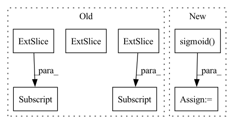

Pattern ID :36362

Before Change
if class_probs[:, -1].max() > 0.5:
batch_classes.append(idx + 1)
batch_scores.append(class_probs[:, -1].max().detach().cpu().numpy())
batch_boxes.append(class_boxes[class_probs[:, -1].argmax()][None].detach().cpu().numpy())
if query_info is not None:
query_info[idx+1].append([class_probs[:, -1].max().item(), class_probs[:, -1].argmax().item()])
boxes.append(np.concatenate(batch_boxes))
classes.append(np.array(batch_classes))
After Change
bs, *_ = out["pred_logits"].shape
// Get probabilities from output logits and select query with highest prob
pred_probs = out["pred_logits"].sigmoid().squeeze().reshape(bs, 20, 27)
pred_boxes = out["pred_boxes"].reshape(bs, 20, 27, -1)
pred_query_ids = pred_probs.argmax(dim=-1)
// Adjust format to fit metric
boxes = []
In pattern: SUPERPATTERN
Frequency: 3
Non-data size: 7
Instances
Fragment ID: 102956322
Project Name: bwittmann/transoar
Commit Name: 09f57bf9bd1146b57db0cce80a0901defe5e5d63
Time: 2022-02-15
Author: bastian.wittmann@tum.de
File Name: transoar/inference.py
M Class Name: AnonimousClass
N Class Name: AnonimousClass
M Method Name: inference(2)
N Method Name: inference(2)
M Parent Class:
N Parent Class:
M File Name: transoar/inference.py
N File Name: transoar/inference.py
M Start Line: 9
M End Line: 36
N Start Line: 6
N End Line: 34
'>
Before Change
boxes = []
classes = []
scores = []
for batch_classes_boxes, batch_classes_probs in zip(classes_pred_boxes, classes_pred_probs):
batch_boxes = []
batch_classes = []
batch_scores = []
for idx, (class_boxes, class_probs) in enumerate(zip(batch_classes_boxes, batch_classes_probs)):
if class_probs[:, -1].max() > 0.5:
batch_classes.append(idx + 1)
batch_scores.append(class_probs[:, -1].max().detach().cpu().numpy())
batch_boxes.append(class_boxes[class_probs[:, -1].argmax()][None].detach().cpu().numpy())
if query_info is not None:
query_info[idx+1].append([class_probs[:, -1].max().item(), class_probs[:, -1].argmax().item()])
boxes.append(np.concatenate(batch_boxes))
classes.append(np.array(batch_classes))
After Change
bs, *_ = out["pred_logits"].shape
// Get probabilities from output logits and select query with highest prob
pred_probs = out["pred_logits"].sigmoid().squeeze().reshape(bs, 20, 27)
pred_boxes = out["pred_boxes"].reshape(bs, 20, 27, -1)
pred_query_ids = pred_probs.argmax(dim=-1)
// Adjust format to fit metric
boxes = []
'>
Fragment ID: 102956323
Project Name: bwittmann/transoar
Commit Name: 09f57bf9bd1146b57db0cce80a0901defe5e5d63
Time: 2022-02-15
Author: bastian.wittmann@tum.de
File Name: transoar/inference.py
M Class Name: AnonimousClass
N Class Name: AnonimousClass
M Method Name: inference(2)
N Method Name: inference(2)
M Parent Class:
N Parent Class:
M File Name: transoar/inference.py
N File Name: transoar/inference.py
M Start Line: 9
M End Line: 36
N Start Line: 6
N End Line: 34
'>
Before Change
y = x[i].clone()
y[..., :5 + self.nc].sigmoid_()
if self.inplace:
y[..., 0:2] = (y[..., 0:2] * 2 + self.grid[i]) * self.stride[i] // xy
y[..., 2:4] = (y[..., 2:4] * 2) ** 2 * self.anchor_grid[i] // wh
else: // for YOLOv5 on AWS Inferentia https://github.com/ultralytics/yolov5/pull/2953
xy, wh, etc = y.split((2, 2, self.no - 4), 4) // tensor_split((2, 4, 5), 4) if torch 1.8.0
xy = (xy * 2 + self.grid[i]) * self.stride[i] // xy
After Change
wh = (wh.sigmoid() * 2) ** 2 * self.anchor_grid[i] // wh
y = torch.cat((xy, wh, conf.sigmoid(), mask), 4)
else: // Detect (boxes only)
xy, wh, conf = x[i].sigmoid().split((2, 2, self.nc + 1), 4)
xy = (xy * 2 + self.grid[i]) * self.stride[i] // xy
wh = (wh * 2) ** 2 * self.anchor_grid[i] // wh
y = torch.cat((xy, wh, conf), 4)
'>
Fragment ID: 102956320
Project Name: ultralytics/yolov5
Commit Name: 060837406542c5c65301b8fde641f4d92a1f395e
Time: 2022-09-17
Author: glenn.jocher@ultralytics.com
File Name: models/yolo.py
M Class Name: Detect
N Class Name: Detect
M Method Name: forward(2)
N Method Name: forward(2)
M Parent Class: nn.Module
N Parent Class: nn.Module
M File Name: models/yolo.py
N File Name: models/yolo.py
M Start Line: 61
M End Line: 77
N Start Line: 58
N End Line: 77
'>
Before Change
nums_nodes, id = graph.batch_num_nodes(), 0
items_embedding = self.item_embedding(torch.tensor([i for i in range(self.items_total)]).to(nodes.device))
batch_embedding = []
for num_nodes in nums_nodes:
output_node_features = nodes_output[id:id + num_nodes, :]
output_nodes = nodes[id: id + num_nodes]
beta = torch.zeros(self.items_total, 1).to(nodes.device)
beta[output_nodes] = 1
embed = (1 - beta * self.alpha) * items_embedding.clone()
embed[output_nodes, :] = embed[output_nodes, :] + self.alpha[output_nodes] * output_node_features
batch_embedding.append(embed)
id += num_nodes
batch_embedding = torch.stack(batch_embedding)
After Change
:return:
items_embedding = self.item_embedding(torch.tensor([i for i in range(self.items_total)]).to(nodes.device))
alpha = torch.sigmoid(self.alpha)
embed = (1 - alpha) * items_embedding.clone() + alpha * nodes_output
return embed
'>
Fragment ID: 102956398
Project Name: benedekrozemberczki/pytorch_geometric_temporal
Commit Name: c402d2a14167bceaa3c8d3845879f8056e8aead7
Time: 2021-07-18
Author: benedek.rozemberczki@gmail.com
File Name: torch_geometric_temporal/nn/attention/dnntsp.py
M Class Name: GlobalGatedUpdater
N Class Name: GlobalGatedUpdater
M Method Name: forward(3)
N Method Name: forward(4)
M Parent Class: nn.Module
N Parent Class: nn.Module
M File Name: torch_geometric_temporal/nn/attention/dnntsp.py
N File Name: torch_geometric_temporal/nn/attention/dnntsp.py
M Start Line: 78
M End Line: 98
N Start Line: 85
N End Line: 87